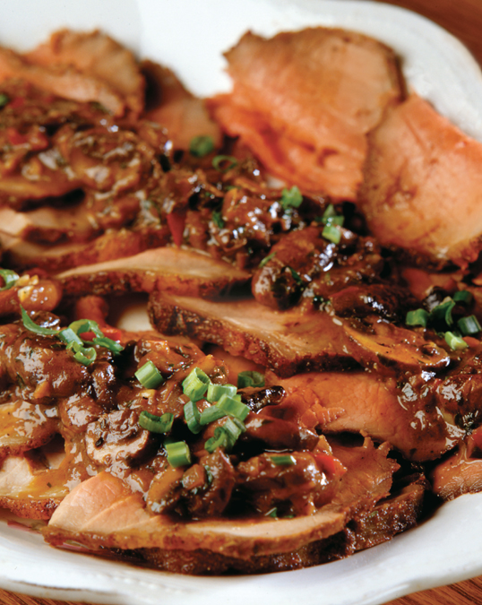

← Back to index
Dinosaur-Style Macaroni & Cheese Shepherd’s Pie

Servings: 6 TO 8
Ingredients
- 3 tablespoons kosher salt
- 1 pound small pasta shells
- 2 tablespoons vegetable oil
- 2 cups chopped onion
- 1 cup chopped green pepper
- 5 large cloves garlic, chopped
- 1 ¼ pounds lean ground beef
- 1 tablespoon black pepper
- ¾ cup Mutha Sauce
- ¼ cup butter
- ¼ cup flour
- 2 ½ cups half-and-half or milk
- 3 cups shredded sharp Cheddar cheese
- 1 cup freshly grated Parmigiano-Reggiano cheese
- 2 teaspoons Dijon mustard
- Tabasco sauce
Instructions
- Throw a skillet on medium heat and swirl in the vegetable oil. Add half the onions and half the peppers, cooking them til soft. Toss in the garlic and cook for about 1 minute more. Dump in the ground beef, breaking it up with a spoon, and cook it with the veggies til it loses its pinkness. Season with 1 ½ teaspoons each of salt and pepper. Mix in the Mutha Sauce and take the pan off the heat.
- Melt the butter in a large saucepan over medium heat, and fry up the rest of the onions and peppers til soft. Add the flour and whisk like crazy til very well blended. Slowly dribble in the half-and-half or milk, whisking as you go. When the mixture bubbles and thickens slightly, remove it from the heat. Stir in 2 cups of the Cheddar, the Parmigiano-Reggiano, mustard, and the remaining 1 ½ teaspoons each of salt and pepper. Spice the sauce up with Tabasco to your liking. Stir til the cheeses are melted, then fold the cheese sauce into the drained pasta and set aside.
- Grease up a 9 by 13-inch baking pan. Spread the ground beef mixture in the pan, and then spread the mac ‘n’ cheese over it. Top everything with the last cup of Cheddar, and pop it into the preheated oven to bake for 30 to 45 minutes, or til the cheese sauce bubbles around the edges. Let the dish rest for 15 minutes before serving—if people can wait that long to eat it.